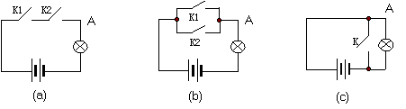

同十进制数一样，二进制数同样有相应的加，减，乘，除之类的运算，这些运算称为数学运算。由于数学运算还涉及到二进制的其它一些重要的知识，因此在这里暂时不做深入讨论。现在主要来讨论二进制数的逻辑操作。
这里所说的逻辑不同于广义的逻辑，事实上在计算机中的逻辑关系十分简单，只有四种
--与逻辑，或逻辑，非逻辑和异或逻辑。与、或和非的关系可以通过一个电路的例子来说明，见图1－1：

在三个图中，灯被点亮的条件是什么呢？很明显，当A点电压和电源电压一致时（即A点输出为1时），灯就会亮。看来主要的问题就是如何使A点输出1？
对于（a）图，只有当开关K1，K2都闭合时，A点才会与电源接通，此时灯亮。若把"开关闭合"这一动作用"1"表示，把"开关断开"用"0"表示，则可以说，在（a）图中只有两个开关都是"1"时，A点才会输出"1"。这种开关状态与输出之间的关系就是"与"逻辑关系。
对于（b）图来讲，两个开关或者K1为"1"（接通），或者K2为"1"，或者两者都为"1"，均可以使A点输出为"1"，这两个开关与输出之间的逻辑关系就称为"或"逻辑关系。
对于（c）图而言，当K为"0"时A点才会输出"1"，K为"1"时电源被短路，此时A点输出"0"。这种逻辑关系称为"非"逻辑关系。
"异或"关系不大好用图表达，但是异或关系有一个重要的特点，就是当进行异或操作的两个数"相同"时所得结果就是"0"，而两个数"不同"时就得"1"。这是一个十分重要的特性，大家需牢牢记住。
所谓逻辑操作，就是把两个数按照选定的某种逻辑关系加以处理并得出结果的过程。逻辑操作通常用于使一个二进制数中的某些数位的状态变成我们需要的其它状态，而不改变其它位。
在汇编语言中，基本的逻辑操作有四种：与操作、或操作、非操作和异或操作。分别记作AND、OR、NOT和XOR。表1－3给出了这四种操作的具体情况。
| 进行逻辑操作的两个数值 | 不同的逻辑操作及其结果 | ||||
| A | B | AND | OR | NOT* | XOR |
| 0 | 0 | 0 | 0 | 1 | 0 |
| 0 | 1 | 0 | 1 | 1 | 1 |
| 1 | 0 | 0 | 1 | 0 | 1 |
| 1 | 1 | 1 | 1 | 0 | 0 |
* 注："非"操作只对一个数进行，表中选择的是A。
下面的例子说明了这四种逻辑操作的应用
① 求一个八位二进制数，与给定的数作OR操作，要求结果为10111101。
② 求一个八位进制数，与给定的数作AND操作，要求结果为00110000。
③ 对给定的数作什么操作可得到二进制数01001011。
④ 若把给定的数同00100010作XOR操作，将得到什么结果。
解： ① 将OR操作的结果同给定的数相比，不难发现只要把给定数字的bit0，bit3位置成1，其它位状态保持不变，即可得出结果。因此可很容易求出八位二进制数00001001，并可验证：
10110100
OR) 00001001
10111101
10110100
OR) 00001001
10111101
可见，OR操作可以方便的将某个二进制数的特定位置成"1"而保存其它位不变。只要取另一个二进制数，让这个数中的相应数位--即和给定的数中要改变的数位相对应的位--为"1"，而其它位为"0"，即可达到目的。
② 将AND操作的结果同给定的数相比，可以看出只要把给定数字的bit2，bit7位置成0，其它位保持不变，即得出结果。因此可很容易求出八位二进制数01111011，并且可以验证：
10110100
AND) 01111011
00110000
可见，和OR操作相对应，AND操作可以把某个二进制数的特定位置"0"而保持其它位不变。只要取另一个二进制数，让这个数的相应位为"0"，而其它位为"1"，即可达到目的。
③ 比较结果和给定数，可看出将已知数所有位取相反状态，可得到结果。因此可用NOT操作，即
NOT) 10110100
01001011
④ 将两个数作XOR操作
10110100
XOR) 00100010
10010110
把得到的结果10010110同已知数相比较，可以看出只要将已知数的bit1，bit5两位取反，就能得出结果。将（3）和（4）进行比较，可以发现这样一个规律：NOT操作可以将给定数的所有位取反，而XOR操作可以将给定数的特定位取反；进一步分析（4），不难看出若把所得到的结果10010110和00100010再作一次XOR操作：
10010110
XOR) 00100010
10110100
又能得到了已知的数。即取反后的数位又重新恢复原状态。因此我们说，XOR操作可以反复改变给定数中的特定位状态。